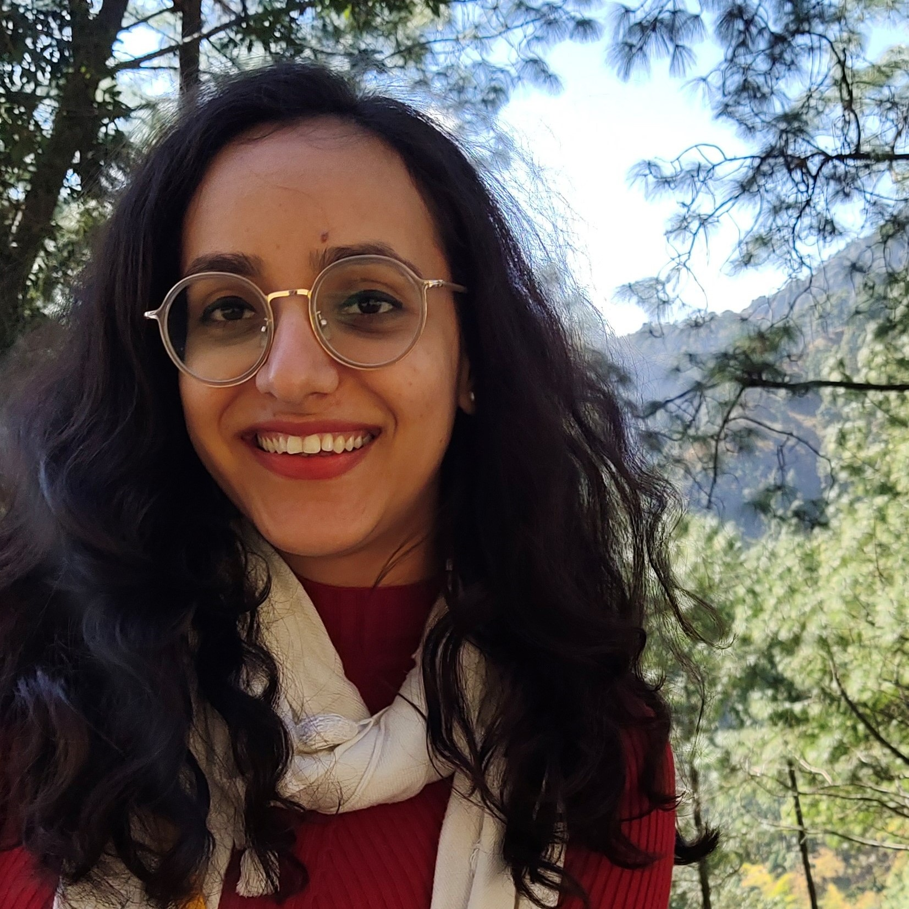

Current Status: Thesis Submitted!
Location: New Delhi, India
Namaste!
I am Ankita, a PhD candidate in the Computer Science Department at IIT Delhi. I primarily work on Computer Vision and Trustworthy Machine Learning. In my doctoral thesis, advised by Prof. Chetan Arora, I study the security and privacy vulnerabilities in deep learning-based computer vision systems, including adversarial, backdoor, and model stealing attacks in safety-critical domains such as medical imaging and surveillance. My broader research interests encompass continual learning, machine unlearning, and computer vision for satellite imaging.
I previously obtained my Masters degree from IIIT Delhi (note the extra "I"), with a thesis on optimization and resource allocation in communication systems under Prof. Pravesh Biyani. I also bring industry experience from the Robotics Lab at Tata Consultancy Services (TCS), where I developed vision solutions for autonomous warehousing and robotics.
[January 2026] Attended AAAI 2026 in Singapore.
[December 2025] Submitted my PhD dissertation.
[October 2025] Paper accepted at AAAI 2026.
[October 2025] Two papers accepted at ICVGIP 2025.
[December 2024] Attended ICVGIP 2024 at IIIT Bangalore.
[July 2024] Paper accepted at BMVC 2024 (Oral).
[June 2024] Paper accepted at MICCAI 2024.
[March 2024] Winner of "3 Minute Thesis" competition organized by Research Scholar Forum, IIT Delhi. Here is my slide for the competition.
[September 2023] Delivered a hands-on session on "Vision Transformers for Brain Tumor Classification in MRI Images" in the workshop on “Artificial Intelligence in Modern Biology” sponsored by DBT at ICGEB, New Delhi.
Backdoor Attacks on Open Vocabulary Object Detectors via Multi-Modal Prompt Tuning
Ankita Raj, Chetan Arora
AAAI Conference on Artificial Intelligence, 2026.
[arxiv]
[code]
[poster]
This paper reveals a new vulnerability in open vocabulary
object detectors like Grounding DINO and GLIP. It introduces Trigger Aware Prompt Tuning (TrAP), a new
method to backdoor such models by injecting trainable prompts in both the vision and text branches.
Mimicking Human Visual Development for Learning Robust Image Representations
Ankita Raj, Kaashika Prajaapat, Tapan Kumar Gandhi, Chetan Arora
Indian Conference on Computer Vision, Graphics and Image Processing (ICVGIP), 2025.
[arxiv]
[code]
[poster]
[video]
Drawing inspiration from the developmental trajectory of human
vision, this paper proposes a progressive blurring curriculum to improve the generalization and robustness
of CNNs. We begin training with highly blurred images during the initial epochs and progressively reduce
the blur as training advances, encouraging the network to prioritize global structures over high-frequency
artifacts, thereby improving robustness against distribution shifts and noisy inputs.
Rethinking Detection Heads: Enhancing YOLO for Drone Image Object Detection
Rutvik Patel, Anureet Chhabra, Ankita Raj, Chetan Arora
Indian Conference on Computer Vision, Graphics and Image Processing (ICVGIP), 2025.
[pdf]
[video]
Existing object detection architectures like YOLOv11 often
struggle with object detection in drone imagery due to factors such as variable flight altitudes, weather
conditions, etc. This paper proposes architectural modifucations that can be incorporated into existing
object detection architectures to make them more suited to object detection in drone imagery.
Examining the Threat Landscape: Foundation Models and Model Theft
Ankita Raj, Deepankar Varma, Chetan Arora
British Machine Vision Conference (BMVC), 2024.
[arxiv]
[code]
[video]
[poster]
This paper studies model stealing attacks on image
classification models adapted for downstream tasks from pretrained models. We show that models adapted
from larger foundation models (such as ViTs) are more vulnerable to model stealing attacks compared to
models derived from conventional vision architectures like ResNets.
Assessing Risk of Stealing Proprietary Models for Medical Imaging Tasks
Ankita Raj, Harsh Swaika, Deepankar Varma, Chetan Arora
International Conference on Medical Imaging and Computer Assisted Intervention (MICCAI), 2024.
[arxiv]
[code]
[poster]
This paper studies the vulnerability of proprietary medical
imaging models to model stealing attacks. It proposes a novel attack method that efficiently steals
medical imaging models under realistic threat scenarios such as limited query budgets and hard label
access.
Identifying Physically Realizable Triggers for Backdoored Face Recognition Networks
Ankita Raj, Ambar Pal, Chetan Arora
International Conference on Image Processing (ICIP), 2021.
[arxiv]
[video]
[poster]
Recent works have shown that face recognition networks are
vulnerable to backdoor attacks from natural-looking triggers like sunglasses and bowties. This paper
proposes a novel technique to detect whether a face recognition network is compromised with a natural,
physically-realizable trigger and to identify such triggers given a compromised network.
Weighted-A* Based Energy Efficient Resource Allocation in G. Fast
Ankita Raj, Pravesh Biyani
IEEE Transactions on Communications, 2019.
[pdf]
This paper formulates and solves an optimization problem to
minimize power consumption in G.fast broadband access technology.
HiFI: A Hierarchical Framework for Incremental Learning using Deep Feature Representation
Ankita Raj, Anima Majumder, Swagat Kumar
IEEE International Conference on Robot and Human Interactive Communication (RO-MAN), 2019.
[pdf]
This paper presents a hierarchical deep-learning framework for
object recognition, with near real-time training for recognizing previously unseen objects.
A* algorithm based power minimization for discontinuous operations in G. fast
Ankita Raj, Pravesh Biyani, Sandip Aine
IEEE International Conference on Communications (ICC), 2017.
[pdf]
This paper proposes a method to schedule users to time slots
during discontinuous operation mode in G.fast, to achieve high energy efficiency.
Analysis and Synthesis Prior Greedy Algorithms for Non-linear Sparse Recovery
Kavya Gupta, Ankita Raj, Angshul Majumdar
Data Compression Conference (DCC), 2016.
[pdf]
[arxiv]
This paper proposes algorithms for recovering sparse solutions
to non-linear inverse problems.